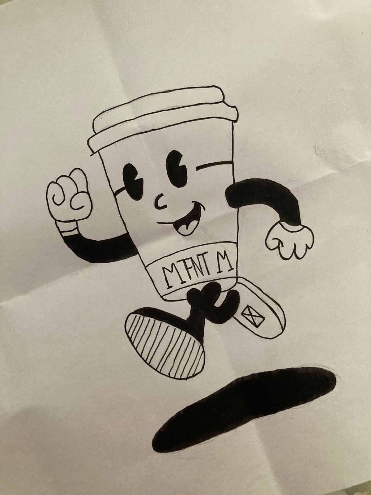

Tengo 20 años, me encanta el arte y la gastronomía. Asimismo, me apasiona la lectura, desde hace 7 años encontré una parte de mi que moría por los libros de romance y drama, anualmente me reto a mi misma a leer 20 libros como mínimo. También, me encanta la musica, me permite mantenerme activa mientras realizo mis actividades diarias, mis géneros preferidos son pop, urbano, reggaettón y kpop.
No obstante, mis personas favoritas son mi familia, me gusta mucho pasar tiempo con ellos, somos un total de 7 personas en un hogar maravilloso que me permite sentirme segura, confiada y sobre todo amada.
Sobre mi pasión hacia la gastronomía lo descubrí durante la pandemía, me forcé a aprender a cocinar y realmente me encantó el proceso, es algo que me relaja y me gusta cocinar para personas importantes para mí, pienso que es una de las mejores maneras de demostrar aprecio y cariño hacia alguien más, mis platos favoritas para preparar son pasta al alfredo, lomo saltado y arroz con pollo.
Profesión y Proyecto
Actualmente me encuentro cursando el séptimo ciclo de la carrera de Publicidad y Marketing Digital en la Escuela Toulouse Lautrec, me apasiona la publicidad, el contenido digital y la redacción.
Busco poder brindar mis servicios, ampliar mis conocimientos y habilidades mediante nuevos aprendizajes laborales. Aún no cuento con antecedentes en el ámbito laboral, sin embargo, me encuentro en la búsqueda de ejercer mis prácticas universitarias, me considero una persona organizada y responsable, creativa e innovadora y tengo la capacidad de trabajar en equipo.
Como idea de proyecto, me gustaría crear un producto de ayuda hacia los alumnos universitarios para disminuir las horas de procastinación. Personalmente, me cuesta dejar aquellos momentos de ocio en donde prefiero hacer cualquier cosa para alejarme de mis responsabilidades, se que es algo que le pasa al 80% de estudiantes, entonces pienso que sería bueno crear un prototipo de ayuda.
Misión

Sobre el significado de la misión, al conversar junto a mis compañeras encontramos algo que teníamos en común, era nuestra preferencia por el café. Personalmente no puedo empezar el día sin tomar una buena taza, esa fue la razón por la que lo dibujamos con brazos y piernas, debido a que nos da la fuerza para empezar nuestras actividades. Me encanta probas las variedades de cafés que existen, por el momento mis favoritos son: Vainilla Latte con leche de avena y Flat White con leche de almendras.